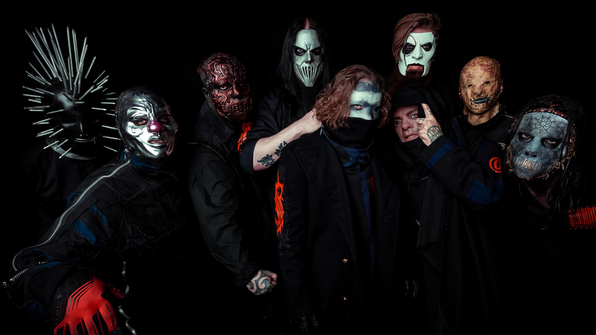

I did my time, and I want out
So effusive, fade
It doesn't cut
The soul is not so vibrant
The reckoning, the sickening
Packaging subversion
Pseudo sacrosanct perversion
Go drill your deserts
Go dig your graves
Then fill your mouth
With all the money you will save
Sinking in, getting smaller again
Undone, it has begun
I'm not the only one
And the rain will kill us all
Throw ourselves against the wall
But no one else can see
The preservation of the martyr in me
Psychosocial, psychosocial, psychosocial (x2)
Oh, there are cracks, in the road we lay
But where the temple fell
The secrets have gone mad
This is nothing new
But when we killed it all
The hate was all we had
Who needs another mess?
We could start over
Just look me in the eyes
And say I'm wrong
Now there's only emptiness
Venomous, insipid
I think we're done
I'm not the only one
And the rain will kill us all
Throw ourselves against the wall
But no one else can see
The preservation of the martyr in me
Psychosocial, psychosocial, psychosocial (x2)
The limits of the dead (x4)
Fake anti-fascist lie (psychosocial)
I tried to tell you, but (psychosocial)
Your purple hearts are giving out (psychosocial)
Can't stop a killing idea (psychosocial)
If it's hunting season (psychosocial)
Is this what you want? (psychosocial)
I'm not the only one
And the rain will kill us all
Throw ourselves against the wall
But no one else can see
The preservation of the martyr in me
And the rain will kill us all
Throw ourselves against the wall
But no one else can see
The preservation of the martyr in me
The limits of the dead (x2)
